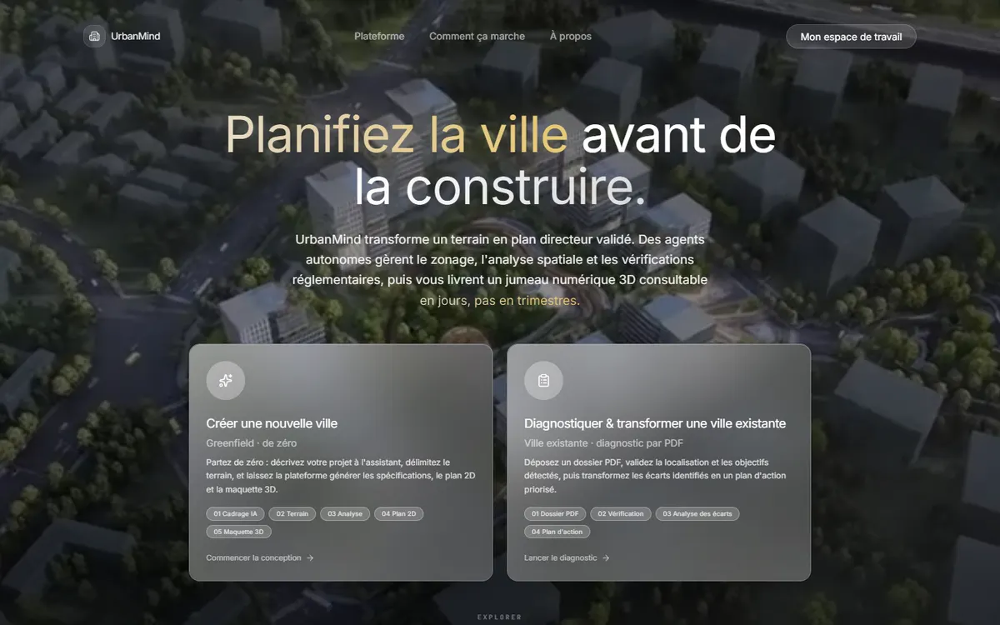

Live product / UrbanMind01
01 / Internship project2026
UrbanMind
Urban planning needs more than a map. Our team built a platform that brings terrain data, regulations, feasibility analysis, and a 3D twin into one workflow.
My contribution
Analysis dashboards, Python scoring, 3D building footprints, and the existing-city path into the digital twin.
Built with
Python, FastAPI, React, geospatial data, React Three Fiber.